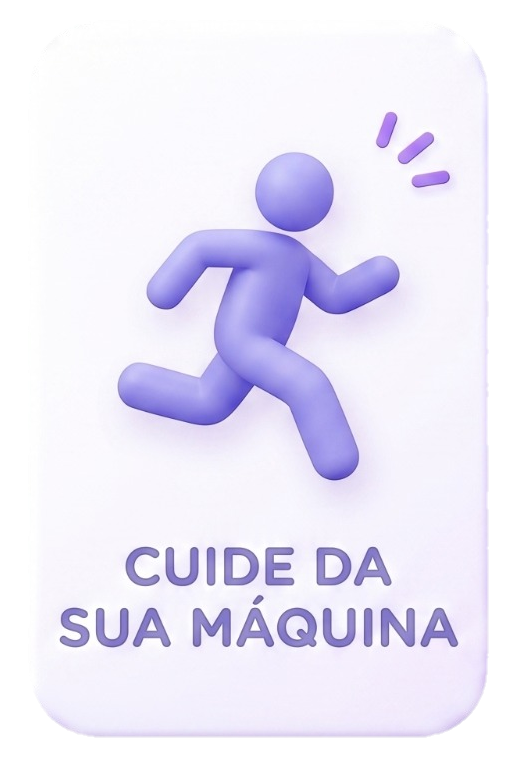
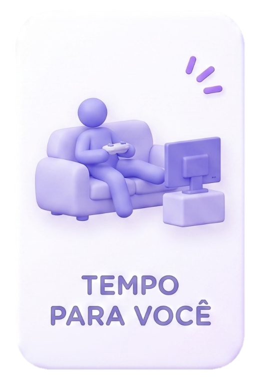
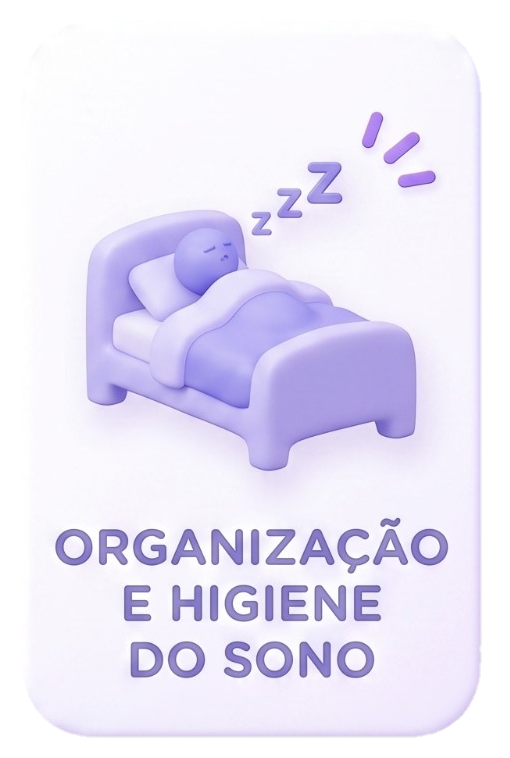

O bem-estar físico está diretamente ligado ao emocional. Encontre uma atividade que você goste de fazer. Pode ser uma caminhada leve no final do dia, praticar calistenia para ganhar força e consciência corporal, ou até mesmo um alongamento matinal. O importante é liberar endorfina e não ficar parado.

A rotina de estudos e trabalho pode ser exaustiva. Reserve um momento do seu dia para se desconectar das origações. Brinque com seu cachorro, jogue algumas partidas do seu jogo favorito com os amigos ou assista a um episódio daquele anime que você está acompanhando. O lazer não é perda de tempo, é recarga de energia.

Um ambiente organizado ajuda a organizar a mente. Tente estruturar suas tarefas do dia seguinte antes de dormir e evite telas brilhantes na cama. Um bom sono de 7 a 8 horas é o melhor remédio para reduzir a ansiedade e manter o foco nas suas metas.
